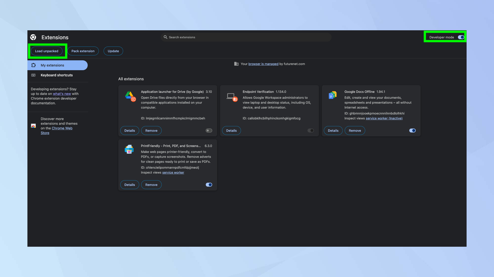

크롬 광고 차단기 설치하기 — 컴퓨터 잘 모르는 사람도 5분이면 OK
뉴스·블로그·유튜브를 볼 때 뜨는 팝업·배너 광고가 거슬린 적 있지?
다운로드 버튼처럼 보이는 가짜 광고를 눌러서 문제 생기는 경우도 있다.
이 글은 구글 크롬에 광고 차단기를 넣는 방법을, 컴퓨터 잘 모르는 사람도 그대로 따라 할 수 있게 정리한 가이드다.
별도 프로그램 설치 없이, 크롬 안에서 「확장 프로그램」 하나 추가하면 된다.
뭘 설치할까? — uBlock Origin Lite 추천
2025년 이후 크롬 정책(Manifest V3) 때문에 예전에 유명했던 uBlock Origin(풀 버전) 은 크롬 웹 스토어에서 내려갔다.
대신 같은 개발자가 만든 uBlock Origin Lite 가 공식 스토어에 올라와 있다.
| 항목 | 설명 |
|---|---|
| 이름 | uBlock Origin Lite |
| 가격 | 무료 |
| 설치 방법 | 크롬 웹 스토어에서 「Chrome에 추가」만 누르면 됨 |
| 하는 일 | 웹 광고, 추적기, 일부 팝업 차단 |
| 주의 | 「Lite」라 풀 버전만큼 세밀한 설정은 어렵지만, 일반 사용자에게는 충분 |
가짜 주의: 스토어에 이름 비슷한 「uBlock」만 있는 짭이 있다. 개발자 Raymond Hill(gorhill) · 사용자 1,600만+ · 이름에 Origin Lite 가 들어간 걸 설치하자.
바로 가기: uBlock Origin Lite — 크롬 웹 스토어
준비물 (3가지만 확인)
- Windows PC (맥도 크롬만 있으면 거의 동일)
- 구글 크롬 브라우저 (파란·빨간·노란·초록 동그라미 아이콘)
- 일반 창으로 크롬 사용 — 시크릿 모드나 게스트 창에서는 확장 프로그램을 추가할 수 없다
1단계: 크롬 웹 스토어 열기
- 크롬을 연다.
- 주소창(맨 위 긴 칸)을 클릭한다.
- 아래 주소를 그대로 복사해서 붙여넣고 Enter를 누른다.
https://chromewebstore.google.com/detail/ublock-origin-lite/ddkjiahejlhfcafbddmgiahcphecmpfh?hl=ko
- uBlock Origin Lite 페이지가 열리면 성공이다.
(검색으로 찾고 싶으면 크롬 웹 스토어에서uBlock Origin Lite를 검색해도 된다.)
2단계: 「Chrome에 추가」 누르기
- 페이지 오른쪽 위에 있는 「Chrome에 추가」 (또는 Add to Chrome) 버튼을 찾는다.
- 버튼을 한 번 클릭한다.
- 작은 창(팝업)이 뜨면 「확장 프로그램 추가」 를 누른다.
권한 안내가 나올 수 있다. uBlock Origin Lite는 광고 차단을 위해 방문하는 사이트 데이터를 읽는 권한이 필요하다. 공식 스토어 + 위 링크라면 일반적으로 안전한 편이다.
3단계: 설치됐는지 확인하기
설치가 끝나면 크롬 오른쪽 위에 빨간 방패 모양 아이콘이 생긴다.
안 보이면 아래 순서로 확인한다.
- 주소창 오른쪽 퍼즐 조각 모양
 을 클릭한다.
을 클릭한다. - 목록에서 uBlock Origin Lite 를 찾는다.
- 이름 옆 핀(📌) 아이콘을 눌러 주소창 옆에 고정한다.
더 자세히 보려면 주소창에 chrome://extensions 를 입력해 확장 프로그램 관리 페이지로 들어갈 수 있다. 목록에 uBlock Origin Lite가 있고 사용 중이면 OK다.

4단계: 잘 되는지 테스트
- 평소 광고가 많던 뉴스 사이트나 블로그를 연다.
- 예전보다 배너·팝업이 줄었는지 본다.
- uBlock Origin Lite 아이콘을 클릭하면, 그 페이지에서 막은 항목 개수가 숫자로 보일 수 있다.
유튜브 광고는 사이트 특성상 완전히 안 막히는 경우도 있다. 「광고가 100% 사라진다」기보다 대부분의 웹 광고·추적을 줄여 준다고 이해하면 된다.
자주 묻는 질문
Q. 예전에 쓰던 uBlock Origin은 어디 갔나요?
구글이 크롬 확장 프로그램 규칙을 바꾸면서 풀 버전은 스토어에서 내려갔다. 크롬을 계속 쓸 거면 uBlock Origin Lite 가 공식 대안이다. 더 강한 차단이 필요하면 Firefox나 Brave 브라우저도 검토해 볼 만하다.
Q. 「개발자 모드」「압축 풀기」 같은 말은 뭐예요?
인터넷에 수동 설치 글이 많다. 초보자는 무시해도 된다. 웹 스토어에서 「Chrome에 추가」만 하면 된다. 개발자 모드·zip 파일·GitHub 다운로드는 고급 사용자용이다.
Q. 사이트가 깨지거나 로그인이 안 돼요
- uBlock Origin Lite 아이콘 클릭 → 이 사이트에서 끄기 (또는 일시 중지).
- 그래도 안 되면
chrome://extensions에서 확장 프로그램을 잠시 끄기.
은행·공공 사이트는 광고 차단을 끄는 것이 안전하다.
Q. 다른 광고 차단기도 되나요?
AdBlock, AdGuard 등도 스토어에 있다. 다만 다운로드 수·평점·개발사를 보고 고르자. 이름만 비슷한 짭 프로그램은 피하는 게 좋다.
한 줄 요약
크롬 열기 → 웹 스토어 링크 열기 → Chrome에 추가 → 확장 프로그램 추가 → 퍼즐 아이콘에서 핀 고정
이 순서면 5분 안에 광고 차단기 설치는 끝난다.
참고 · 이미지 출처
- Google Chrome 고객센터 — 확장 프로그램 설치 및 관리
- uBlock Origin Lite — Chrome Web Store
- uBlock Origin 공식 사이트 (한국어)
- 스크린샷 일부: Tom's Guide — How to enable uBlock Origin in Chrome (Future Publishing)
2026-07-07 · 영은.Dev